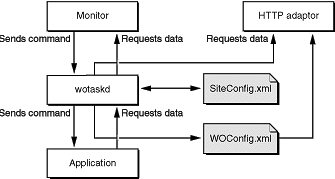

| PATH |

You need to master two important aspects of WebObjects Deployment: the communication paths of client requests and server activity, and the deployment tools you use to configure your site.
Communication among the elements that make up a deployment occurs in two paths: the data path and the control path.
A client HTTP request takes the data path after it reaches your HTTP server. Figure 2-4 shows how an HTTP request that your HTTP server receives is passed to the elements that generate the response.
Figure 2-4 The data path of a WebObjects deployment
Monitor requests take the control path to propagate configuration changes to application hosts and, ultimately, application instances. These include adding application instances and starting and stopping instances according to a schedule that you define. The HTTP adaptor can obtain site information by polling wotaskd (WebObjects task daemon) processes or by reading the adaptor configuration file. (See "Deployment Tools" for information about Monitor and wotaskd.) Figure 2-5 shows the control path.
Figure 2-5 The control path of a WebObjects deployment
Figure 2-6 shows how the data path and control path are differentiated in the rest of the book.
Figure 2-6 The symbols used to represent the data path and the control path
The main tools you use to manage your site are wotaskd and Monitor. Normally, one wotaskd process runs on each application host. If you want to concurrently deploy multiple sites on the same hardware, you can configure a computer to run more than one wotaskd process. This essentially provides you with several independent application hosts per computer.
You manage a group of application hosts using Monitor, a tool that uses your Web browser as its user interface. Monitor lets you set, among other things, instance scheduling and the load-balancing scheme to be used for each application. Because each Monitor process maintains state information locally, you must run only one instance of Monitor per site. Figure 2-7 shows two application sites on one computer.
Figure 2-7 Two sites deployed on one computer
Figure 2-8 shows how you can distribute application instances among two computers.
Figure 2-8 Two sites deployed on two computers
After you configure your site using Monitor, it enforces that configuration by performing tasks such as stopping and restarting application instances according to a schedule you set and sending email notifications when problems arise. The HTTP adaptor performs load balancing across the instances of each application on your site.
For detailed information on the subjects introduced above, see the following chapters or sections: